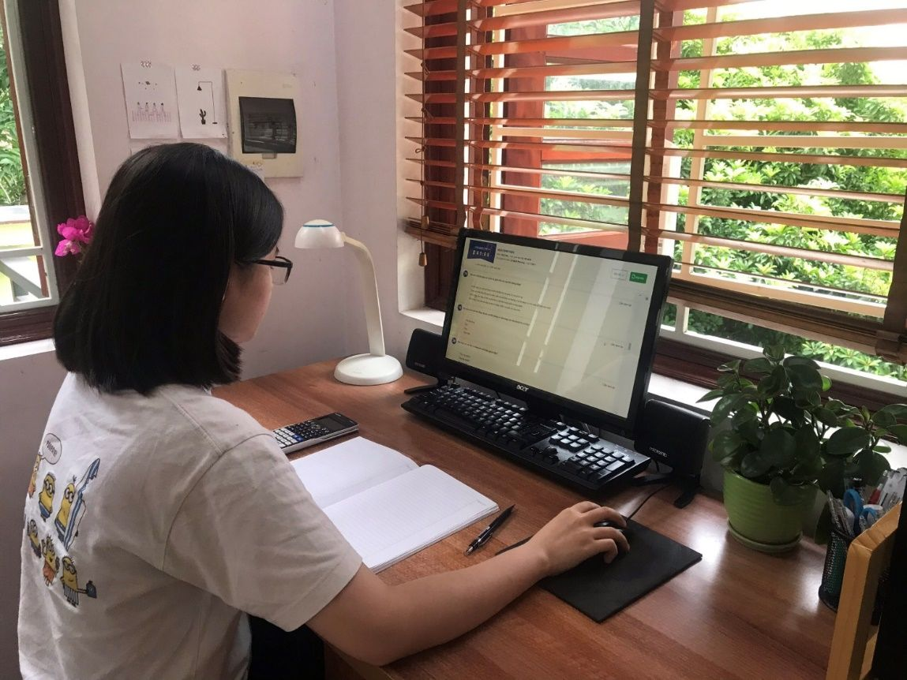

Khảo sát trực tuyến cho học sinh lớp 12 chuẩn bị thi tốt nghiệp THPT năm 2021
Để chuẩn bị cho kỳ thi tốt nghiệp THPT năm 2021, ngày 04 - 05/6/2021, Sở GDĐT đã tổ chức cho học sinh lớp 12 trên địa bàn tỉnh làm bài kiểm tra khảo sát theo hình thức trực tuyến tại Hệ thống quản lý học và thi trực tuyến k12online.vn.
Các bài kiểm tra khảo sát đều được tổ chức theo hình thức trắc nghiệm khách quan trực tuyến.
Mỗi học sinh lớp 12 THPT dự kiểm tra khảo sát 03 bài, trong đó có 02 bài bắt buộc (Toán, Tiếng Anh) và một bài tổ hợp tự chọn Khoa học tự nhiên (tổ hợp các môn Vật lí, Hóa học, Sinh học) hoặc Khoa học xã hội (tổ hợp các môn Lịch sử, Địa lí, Giáo dục công dân).
Mỗi học viên lớp 12 học chương trình GDTX cấp THPT dự kiểm tra khảo sát 02 bài, trong đó có 01 bài bắt buộc (Toán) và 01 bài tổ hợp tự chọn Khoa học tự nhiên (tổ hợp các môn Vật lí, Hóa học, Sinh học) hoặc Khoa học xã hội (tổ hợp các môn Lịch sử, Địa lí).
Đối với môn Ngữ văn và các môn ngoại ngữ khác các đơn vị căn cứ vào tình hình thực tế, chủ động giao nhiệm vụ cho giáo viên bộ môn tiến hành ôn tập, đánh giá kết quả học sinh đảm bảo phù hợp với nội dung hướng dẫn ôn thi tốt nghiệp THPT năm 2021 của Bộ GDĐT.

Học sinh trường THPT Thuận Thành số 1 đang làm kiểm tra khảo sát môn Sinh học ngày 05/6/2021.
Để đảm bảo hiệu quả đợt kiểm tra khảo sát, các đơn vị đã phân công cụ thể cán bộ, giáo viên, quản trị hệ thống làm nhiệm vụ hỗ trợ, giám sát học sinh làm bài kiểm tra khảo sát; phối hợp với cha mẹ học sinh chuẩn bị tốt các điều kiện về cơ sở vật chất (máy vi tính, máy tính bảng, điện thoại thông minh, đường truyền nối mạng Internet) phục vụ cho kỳ kiểm tra khảo sát.
Kết thúc đợt kiểm tra khảo sát đã có 15.873 học sinh toàn tỉnh tham dự kiểm tra khảo sát, trong đó môn Toán: 15.807 học sinh; môn Tiếng Anh: 13.992 học sinh; môn Vật lí: 5.971 học sinh; môn Hóa học: 5.935 học sinh; môn Sinh học 5.869 học sinh; môn Lịch sử: 10.169 học sinh; môn Địa lí: 10.013 học sinh và môn GDCD: 8.364 học sinh.
Đề kiểm tra, đáp án kiểm tra các môn được gửi về các đơn vị ngay khi kết thúc đợt kiểm tra khảo sát; kết quả kiểm tra khảo sát là căn cứ quan trọng để các nhà trường phân tích, đánh giá và có các biện pháp ôn tập củng cố, bổ sung kịp thời kiến thức cho học sinh để kỳ thi tốt nghiệp THPT năm 2021 đạt kết quả tốt.
Kết quả điểm trung bình các đơn vị tại đường link dưới đây:
https://docs.google.com/spreadsheets/d/1JLJCgMRvUZDf4k8N1OCjyssikiHshg6MIaHBiiMDqjc/edit?usp=sharing.
Từ ngày 06/5/2021, khi học sinh toàn tỉnh nghỉ học, cùng với hình thức ôn tập trên đài PT-TH tỉnh; giáo viên dạy học qua các ứng dụng; học sinh lớp 12 toàn tỉnh đã được học trực tuyến trên internet với hệ thống bài giảng, đề ôn tập đã được đội ngũ giáo viên cốt cán của tỉnh thẩm định. |